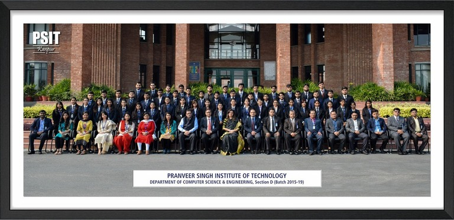

CONTACT US
- Email Information :admission@psit
- Phone1:68005334433
- Phone2:8005336633
- ADDRESS : 117/H-1/315, Model Town, Pandu Nagar, Kanpur-208005

Faculties of CSE department
VISION:
To be a recognized Department of Computer Science & Engineering that produces versatile computer
engineers,
capable of adapting to the changing needs of computer and related industry.
Mission:
To provide broad based quality education with knowledge and attitude to succeed in Computer Science &
Engineering careers.
To prepare students for emerging trends in computer and related industry.
To develop competence in students by providing them skills and aptitude to foster culture of continuous and
life-long learning.
The department is committed to develop practicing engineers who investigate research, design and find
workable solutions to complex engineering problems with awareness & concern for society as well as
environment.
Program Educational Objectives (PEOs):
The graduates will be efficient leading professionals with the knowledge of Computer Science & Engineering
discipline that enables them to pursue higher education and/or successful careers in various domains.
Graduates will possess capability of designing successful innovative solutions to real life problems that
are technically sound, economically viable and socially acceptable.
Graduates will be competent team leaders, effective communicators and capable of working in
multidisciplinary teams following ethical values.
The graduates will be capable of adapting to new technologies/tools, constantly upgrading their knowledge
and skills with an attitude for lifelong learning.
Program Outcomes(POs):
Engineering Knowledge: To apply the knowledge of mathematics, science and Computer Science & Engineering
fundamentals to the solution of complex engineering problems.
Problem Analysis: To identify, formulate, review research literature, and analyze complex Computer Science &
Engineering problems reaching substantiated conclusions using principles of mathematics, natural sciences,
and engineering.
Design/development of Solutions: To design solutions for Computer Science & Engineering and allied fields
related to complex engineering problems, design system components or processes that meet the specified needs
of the public health , safety, and the culture, society, and environment appropriate consideration .
Investigation: Use research-based knowledge of Computer Science & Engineering , research methods including
design of experiments, analysis and interpretation of data, and synthesis of the information to provide
valid conclusions.
Modern Tool Usage: Create, select, and apply appropriate techniques, resources, and modern engineering and
IT tools including prediction and modeling to complex Computer Science & Engineering activities with an
understanding of limitations.
Program Specific Outcomes (PSOs):
Use algorithms, data structures/management, software design, concepts of programming languages and
computer organization and architecture.
Understand the processes that support the delivery and management of information systems within a
specific application environment.
::Head of the Department::
Faculties of the CSE department:
| S.No. |
Section Name |
Employee Name |
Employee code |
| 1 |
PSITCOE-CS-IV-A |
Amit Kumar Sharma |
fc17020 |
| 2 |
PSITCOE-CS-IV-A |
Abhay Kumar Tripathi |
fc17069 |
| 3 |
PSIT-CS-III-D |
Dipti Yadav |
fc22094 |
| 4 |
PSIT-CS-III-B |
Kumar Saurabh |
fc16060 |
| 5 |
ELITE-II |
Anshul Atre |
fc22065 |
| 6 |
PSIT-CS-AI-III-A |
Gaurav Bajpai |
fc16082 |